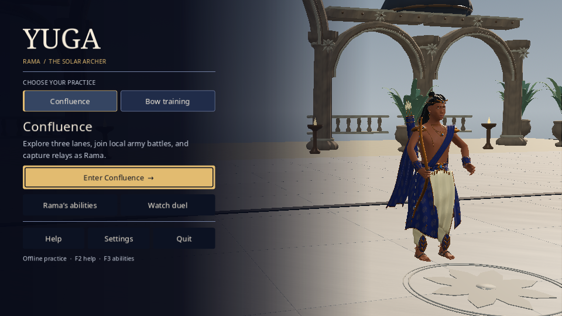
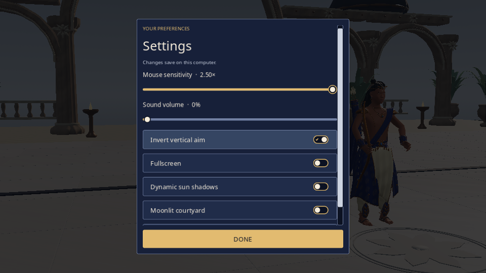
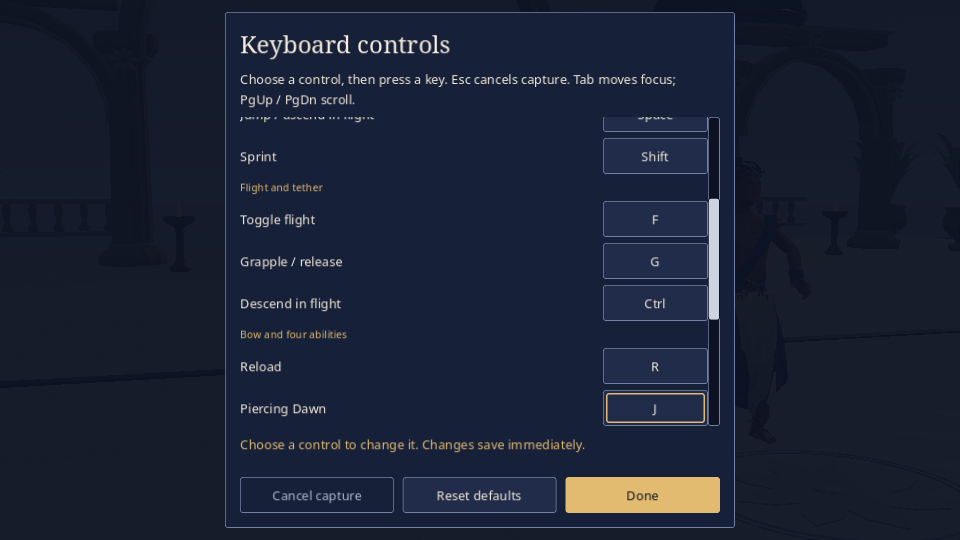
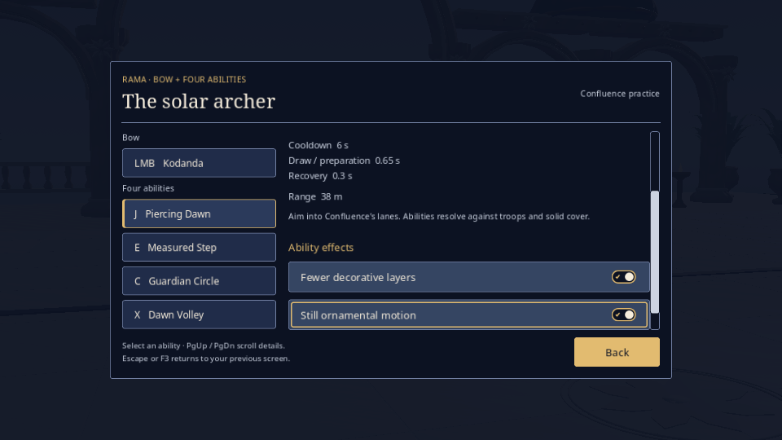

relaunch-r1
Untouched framebuffer originals. Native window 960×600; integrated framebuffer 960×540. Read each JSON for actual phase, state and fixture scope.
R00-package-relaunched-title.png · stateNative navigation / observed loading phase.
R01-relaunched-settings.png · stateNative navigation / observed loading phase.
R02-relaunched-remapped-control.png · stateNative navigation / observed loading phase.
R03-relaunched-guide-preferences.png · stateNative navigation / observed loading phase.
auto-constructing-1.png · stateNative navigation / observed loading phase. auto-loading-1.png · stateNative navigation / observed loading phase.
auto-loading-1.png · stateNative navigation / observed loading phase. auto-queued-1.png · stateNative navigation / observed loading phase.
auto-queued-1.png · stateNative navigation / observed loading phase.